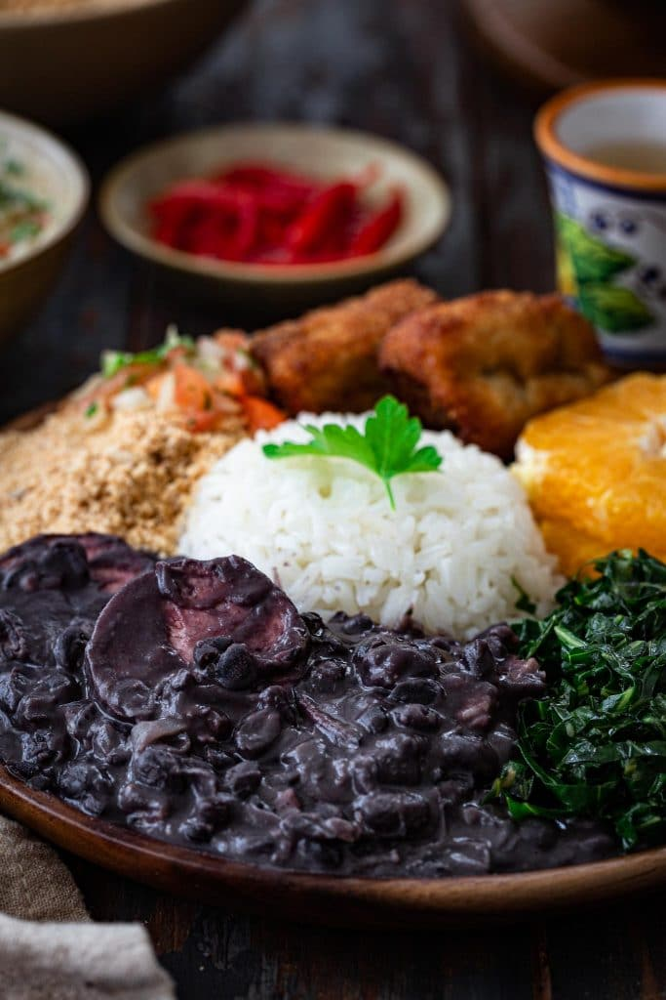

Home
Source
Feijoada

Description
Feijoada, pronounced fay-jwah-dah, is considered Brazil's national dish.
The name comes from the word feijão, which means bean, an essential ingredient of the dish. Black beans, salted beef and pork come together in a hearty slow cooked stew, traditionally served with rice, collard greens and farofa (toasted manioc flour).
Ingredients
You do not need a whole lot of ingredients to make a darn good feijoada. A few pantry staples combined with a few cuts of pork and beef come together to make the most delicious black bean stew you've ever tasted!
- 1 pound carne seca (see notes for substitutions)
- 3 large (about 1 pound) smoked calabresa sausages
- 2 (about 8 ounces) paio sausages
- 5 cups (about 2.2 pounds) dried black beans
- 1 tablespoon vegetable oil
- 6 slices thick-cut bacon, diced
- 1 large onion, chopped
- 12 cloves garlic, minced
- Salt and freshly ground pepper, to taste
Steps
- The day before you plan on cooking the feijoada, trim the excess fat of all the meats (except the bacon) and place them in a large bowl. Cover with cold water and refrigerate for 24 hours, changing the water 3-4 times, to get rid of the excess salt.
- Place the black beans in a separate bowl and cover with cold water. Let them soak overnight in the fridge.
- Drain the meat and beans. Place the soaked meat in a large Dutch oven or heavy bottomed pot and cover with enough water so they're all submerged. Cook, over medium-high heat, until boiling. Let them boil for 20 minutes, adding more water as needed. Drain and reserve.
- Combine the boiled carne seca, beans, bay leaves and orange in that same pot. Pour 2.5 quarts cold water and cook, over medium-high heat, until boiling. Lower the heat to a gentle simmer, cover and cook for 30 minutes.
- After 30 minutes, add the sausages. Cover and continue simmering, occasionally skimming the fat that rises to the top, until the meat is tender, about 1.5 to 2 hours.
- Remove the orange and bay leaves. Discard. Remove the meat and sausage and slice into smaller pieces. Reserve.
- Heat the oil in a sauté pan, over medium heat. Add the bacon and cook until no longer raw but not yet golden brown, about 3-5 minutes. Add the onion and garlic and sauté until softened and fragrant, about 2-3 minutes. Add a ladleful of the cooked beans, without liquid, and stir to combine. Using a fork, mash the beans, to release their starch.
- Pour that mixture into the feijoada pot and cook over medium heat, uncovered, for 10-15 minutes or until thickened. If too thick, add more water as needed. Taste and season with salt and pepper.
- Return the meats back to the pot.
- Serve with white rice, collard greens, fried bananas, farofa, vinaigrette salsa and orange slices!
Notes
Substitutions:
- Carne seca: Corned beef or boneless short ribs.
- Smoked calabresa sausage and paio sausage: use other smoked sausages, like andouille or kielbasa. Smoked chorizo can also be used.